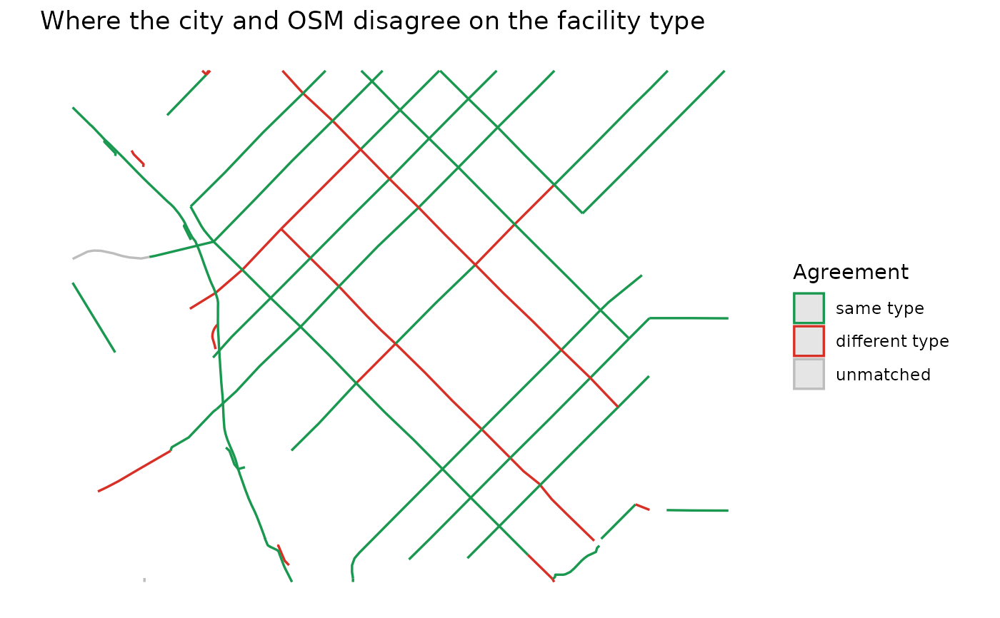

Measures how much of each layer lies within tolerance metres of the
other, and whether the two agree on the kind of facility where they
overlap.
Arguments
- osm
An
sffromcl_bike_lanes()orcl_classify().- official
An
sffromcl_fetch_official().- tolerance
Match distance in metres. Fifteen metres absorbs the usual centreline-vs-curb offset between sources without bridging parallel streets.
Value
A list of class cl_comparison:
summary: one row per layer withlength_km,matched_km,matched_frac,type_agreement(share of matched length whose types agree) andtype_adjacent(share that agrees within one level);by_type: the same broken down byfacility_typewithin each layer;confusion: a matrix of kilometres, official facility type by OSM facility type, with anunmatchedcolumn for official length OSM has nothing near;osm,official: the inputs (WGS84) withmatched_frac,other_type,type_matchandtype_adjacentcolumns added, so disagreements can be mapped;tolerance.
Details
A segment's matched fraction is the share of its length inside a
buffer around the other layer, so it is 1 where both sources agree a
facility exists and 0 where one source has something the other lacks.
For matched segments, other_type is the facility type of the other
layer that covers most of the segment, type_match says whether it
equals the segment's own type, and type_adjacent whether it is one
step away in cl_facility_levels() (painted vs buffered lane, say),
which is often a tagging choice rather than a real difference.
Examples
lanes <- cl_classify(denver_lodo$osm, drop_none = TRUE)
cmp <- cl_compare(lanes, denver_lodo$official)
cmp
#> <cl_comparison> tolerance = 15 m
#>
#> layer n_segments length_km matched_km matched_frac type_agreement
#> osm 413 27.5 25.0 0.908 0.733
#> official 55 17.9 16.6 0.927 0.780
#> type_adjacent
#> 0.785
#> 0.836
#>
#> By facility type:
#> layer facility_type n_segments length_km matched_frac type_agreement
#> osm separated_path 90 5.5 0.985 0.286
#> osm shared_use_path 53 2.3 0.506 0.458
#> osm protected_lane 162 12.7 0.999 0.993
#> osm buffered_lane 18 1.7 0.976 0.676
#> osm painted_lane 66 4.1 0.861 0.722
#> osm shared_lane 24 1.3 0.473 0.000
#> official separated_path 7 1.8 0.998 0.896
#> official shared_use_path 8 1.1 0.665 0.884
#> official protected_lane 22 11.0 0.919 0.711
#> official buffered_lane 4 1.0 1.000 1.000
#> official painted_lane 14 3.0 0.987 0.845
#> type_adjacent
#> 0.296
#> 1.000
#> 0.999
#> 1.000
#> 0.727
#> 0.000
#> 1.000
#> 1.000
#> 0.733
#> 1.000
#> 0.995
#>
#> Official type (rows) vs OSM type (columns), km:
#> osm
#> official separated_path shared_use_path protected_lane buffered_lane
#> separated_path 1.6 0.2 0.0 0.0
#> shared_use_path 0.2 0.7 0.0 0.0
#> protected_lane 3.0 0.2 7.8 0.0
#> buffered_lane 0.0 0.0 0.0 1.0
#> painted_lane 0.0 0.0 0.0 0.4
#> osm
#> official painted_lane unmatched
#> separated_path 0.0 0.0
#> shared_use_path 0.0 0.2
#> protected_lane 0.0 0.0
#> buffered_lane 0.0 0.0
#> painted_lane 2.5 0.0
cmp$confusion
#> osm
#> official separated_path shared_use_path protected_lane buffered_lane
#> separated_path 1.60761845 0.1867519 0.000000 0.0000000
#> shared_use_path 0.19492288 0.7102567 0.000000 0.0000000
#> protected_lane 2.97473308 0.2170354 7.824028 0.0000000
#> buffered_lane 0.00000000 0.0000000 0.000000 0.9652033
#> painted_lane 0.01438692 0.0000000 0.000000 0.4386228
#> osm
#> official painted_lane unmatched
#> separated_path 0.00000 0.00000000
#> shared_use_path 0.00000 0.20750171
#> protected_lane 0.00000 0.00000000
#> buffered_lane 0.00000 0.00000000
#> painted_lane 2.50678 0.01045269
if (requireNamespace("ggplot2", quietly = TRUE)) {
cl_plot(cmp$official, colour = "type_match",
title = "Where the city and OSM disagree on the facility type")
}

if (FALSE) { # \dontrun{
# city-wide
osm <- cl_bike_lanes("Denver, Colorado")
den <- cl_fetch_official("denver", bbox = attr(osm, "cl_boundary"))
cl_compare(osm, den)
} # }